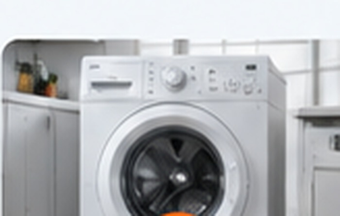
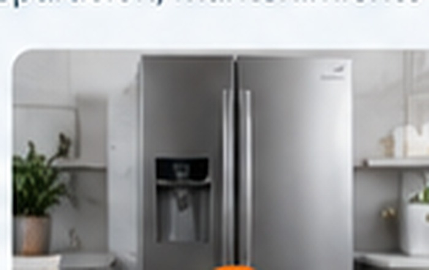
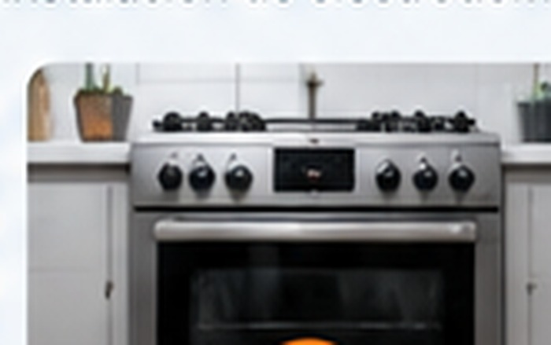
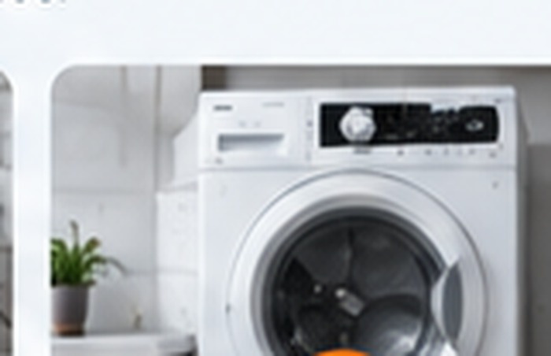
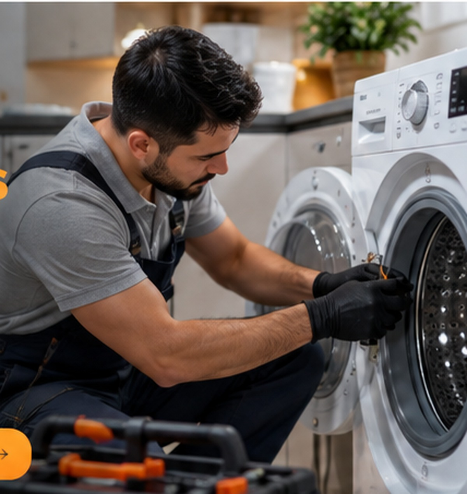

Revisamos el problema y explicamos opciones.
SERVICIO A DOMICILIO · CDMX Y ESTADO DE MÉXICO
Tu línea blanca
en buenas manos
Reparación y mantenimiento de electrodomésticos con atención profesional, garantía por escrito y soluciones claras para tu hogar.
✓Más de 10 añosde experiencia
◇Garantíapor escrito
◷Servicio urgentemismo día*
⌖A domicilioen tu zona
Información directa antes del trabajo.
En CDMX y Estado de México.
Condiciones documentadas.
¿QUÉ NECESITA TU ELECTRODOMÉSTICO?
Soluciones para tu línea blanca
Cuéntanos qué está pasando. Te orientamos sobre la disponibilidad de visita a domicilio.

Reparación de lavadoras
¿Hace ruidos al centrifugar, no desagua o dejó de funcionar? Revisamos la falla y las opciones de reparación.
Consultar por WhatsApp →
Reparación de refrigeradores
Si tu refrigerador no enfría o enfría poco, revisamos la causa y te orientamos.
Consultar por WhatsApp →
Reparación de estufas
Revisión de fallas de funcionamiento y mantenimiento de estufas domésticas.
Consultar por WhatsApp →
Reparación de secadoras
Si no seca bien, hace ruidos o necesita mantenimiento, solicita una revisión.
Consultar por WhatsApp →EXPERIENCIA CON DISTINTAS MARCAS
Servicio para las marcas más populares
Consulta la disponibilidad de revisión y reparación para tu electrodoméstico.
- SAMSUNG
- LG
- Whirlpool
- mabe
- FRIGIDAIRE
- BOSCH
- Electrolux
- MAYTAG
- GE Appliances
- Midea
Las marcas se muestran únicamente como referencia de los equipos sobre los que puedes consultar.
¿TE ESTÁ PASANDO AHORA?
Que una falla no te complique el día.
Cuéntanos qué hace tu equipo y en qué zona te encuentras.

+10años de experiencia
ATENCIÓN CERCANA Y PROFESIONAL
Un servicio pensado para darte tranquilidad
Sabemos lo importante que es tener tus electrodomésticos funcionando. Ofrecemos atención clara y servicio a domicilio.
- Más de 10 años de experiencia.
- Atención en CDMX y Estado de México.
- Garantía por escrito, con condiciones explicadas.
- Posible atención el mismo día, según disponibilidad.
⌖Confirmar mi zona →
VAMOS HASTA TU DOMICILIO
Cubrimos CDMX y Estado de México
Comparte tu colonia o municipio para confirmar cobertura y horario.
ESTAMOS PARA AYUDARTE
Solicita tu servicio en unos minutos
Incluye el tipo de equipo, la falla y tu ubicación para agilizar la atención.
◉
WhatsApp
Cuéntanos qué le sucede a tu equipo.
Enviar mensaje →☎
Llamada telefónica
Habla directamente con el servicio técnico.
Llamar ahora →PREGUNTAS FRECUENTES
Información antes de agendar
¿En qué zonas ofrecen servicio?
Atendemos domicilios en Ciudad de México y Estado de México. Confirma tu colonia o municipio por WhatsApp.
¿Pueden acudir el mismo día?
Las urgencias pueden atenderse el mismo día, sujetas a disponibilidad, horario y ubicación.
¿Ofrecen garantía por escrito?
Sí. Solicita que te expliquen el alcance y las condiciones antes de autorizar el trabajo.
Mi refrigerador no enfría, ¿necesita gas?
La falta de enfriamiento puede tener distintas causas. Primero debe revisarse el equipo para determinar si requiere reparación del sistema o refrigerante.